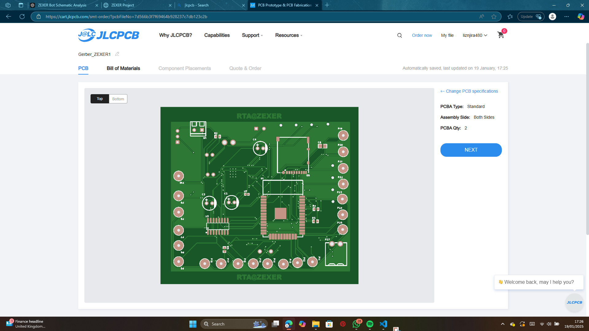
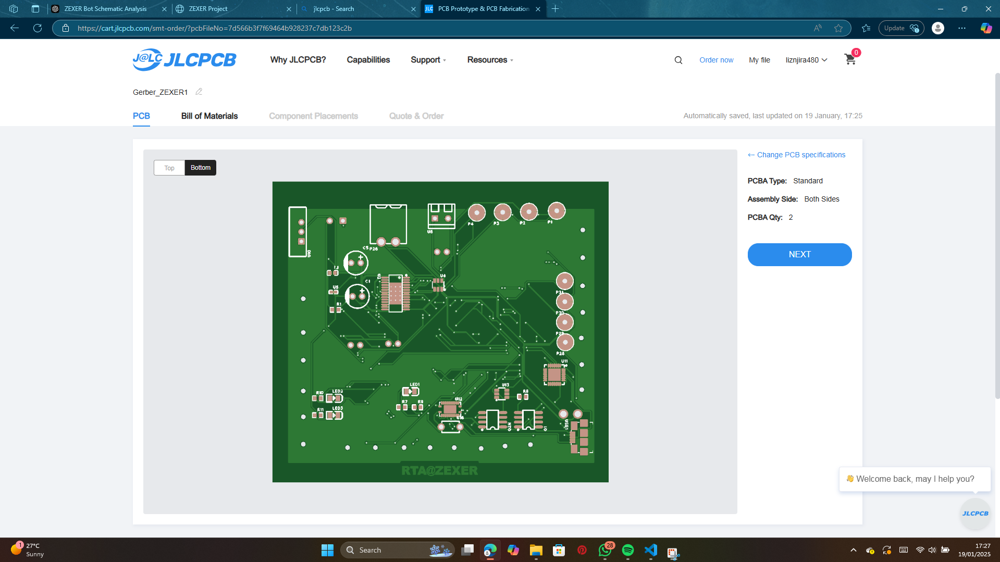
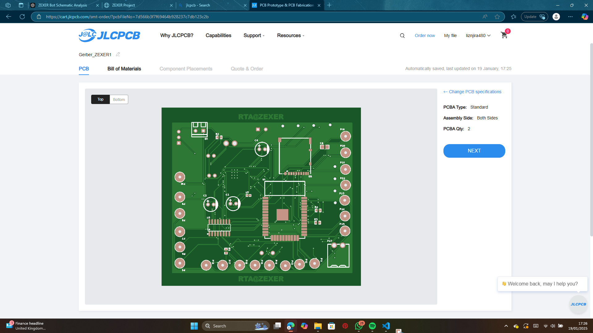
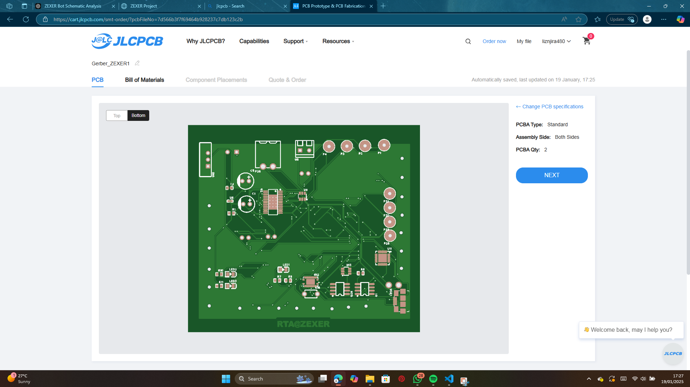

Prototype
HEAD
ABDOMEN
BASE
Components
Key Features for the Prototype
- Facial Recognition: Scans and registers students' names and faces.
- Attendance Tracking: Tracks attendance using the facial recognition system.
- Interactive Teaching: Includes basic lessons, quizzes, and interactive student activities.
- Content Delivery: Displays uploaded notes and multimedia content.
Revised Design Features
Display on the Head:
- Small LCD screen for facial representations (e.g., animations or icons).
- Dynamic expressions to simulate interaction.
Projector on the Back:
- Portable projector to deliver content on a wall or screen.
- Acts as a teaching tool for group lessons.
Interactive Features:
- Facial recognition system for personalized interactions.
- Audio teaching via a speaker system.
Hardware Components
- ESP32 Dev Board: For overall control.
- ESP32-CAM Module: Handles facial recognition.
- OLED/IPS Display: Displays facial expressions or student names.
- DIY Mini Projector: Created using:
- Small TFT 2.4–3.5 inch LCD screen
- CREE XLamp series XHP50
- Sunon MF40101V2 40x40x10 mm cooling fan
- Speaker with Amplifier (PAM8403): For voice output.
- MicroSD Card Module: Stores video, audio, or image content.
- Lithium-ion Battery: For portability, paired with a 5V boost converter (MT3608).
- 3D-Printed Enclosure: Protects and organizes components.
Prototype Progress
I'm in the final stages of bringing the ZEXER prototype to life. After completing the planning phase, I’ve moved forward with the design and purchased most of the necessary components. I’m now waiting for the remaining parts to arrive, after which I’ll assemble everything and begin testing. Once the hardware is put together, the next step will involve programming and troubleshooting to ensure everything functions seamlessly.
Initial Designs and Planning
The initial design of the prototype was carefully planned out, and here are some of the early sketches that helped shape the final version:

"Here’s where the magic begins: a detailed pencil sketch of the ESP32 CAM module paired with a Graphic LCD, illustrating how the components will be connected. On the right side, you can see the actual physical modules—it's like a sneak peek into the future prototype, where imagination meets reality. The sketch is a blueprint, and the modules are the building blocks coming to life! It's amazing how these little pieces of tech will come together to create the foundation for the interactive learning system. The ESP32 CAM module is the brain behind facial recognition, while the Graphic LCD will be used to display dynamic expressions, making our prototype not just functional but expressive!"

"Now, let’s zoom in on the heartbeat of the prototype—the abdomen area! This detailed sketch shows the inner workings, featuring key components like the MT3608 boost converter, constant current driver, 3.7V battery, TFT LCD screen, audio amplifier, microSD card module, cooling fan, and speaker. Each part is strategically connected to the ESP32 module, ensuring everything functions seamlessly. On the left, you’ll see a visual breakdown of how these components interlink, providing power, display, sound, and storage. The boost converter ensures stable voltage, while the constant current driver keeps everything running smoothly without overloading. The cooling fan ensures things stay cool during operation, and the audio amplifier will make sure the system is heard loud and clear. Plus, with the microSD card module, we can store a ton of teaching content for later use! It's like the ‘organizing center’ of the prototype, where all these essential elements come together to give the bot the power, intelligence, and interactive ability it needs."
With most of the components already purchased, I’m just waiting for the final few to complete the build. After assembling the parts, I’ll begin testing to ensure everything works as expected. The final hurdle will be programming the system and troubleshooting any issues that arise during testing. I’m excited to see how the prototype evolves as I move forward!
PCB Customization
While I am currently working on the prototype using pre-made modules, one of my primary goals is to create a compact and portable design. However, I recognize that relying on these off-the-shelf components may not be ideal for the final version of the bot. These modules take up space, involve complex wiring, and lack the streamlined integration needed for a polished, professional product.
To overcome these limitations, I have decided to design and customize my own PCB, which I will incorporate into future iterations of the prototype. Although I am not an expert in PCB design, this step will allow me to:
- Optimize the layout for better space efficiency and portability.
- Embed connections directly onto the board, eliminating the need for excessive wiring.
- Achieve a professional and robust design tailored to the specific needs of the bot.
- Improve reliability by minimizing interference and ensuring consistent power delivery.
Designing a PCB is a significant learning curve for me, but it’s also an exciting challenge. I have started working on the schematics, component placement, and routing to ensure that all the features of the bot are seamlessly integrated into one cohesive system.


 



View Component Details
3D Printing the Prototype Case
One of the critical steps in completing the ZEXER prototype is designing and printing the case that will house all the electronic components. As I’m utilizing an existing model I’ve created in Blender, I’m in the process of designing a custom 3D-printed enclosure that will protect and organize the components of the bot while ensuring easy access for maintenance and upgrades.
The design of the case takes into account a variety of important considerations, such as:
- Component Size and Layout: The case is being designed to perfectly accommodate the size and layout of all the core components, including the ESP32 Dev Board, ESP32-CAM Module, OLED/IPS Display, Projector, and other hardware components. Ensuring a snug yet accessible fit will prevent movement and ensure reliable functionality during use.
- Ventilation and Cooling: Considering the potential heat generated by components like the MT3608 boost converter, audio amplifier, and speaker, the case will feature ventilation areas to promote proper airflow. Additionally, there will be room for the cooling fan to ensure that heat does not build up, ensuring longevity and stability during operation.
- Component Accessibility: The case will have easy access to ports and connections, such as the power input, microSD card slot, and the camera module. This will allow for seamless upgrades, testing, and troubleshooting.
- Weight and Portability: I’m working to create a case that’s lightweight and portable, ensuring that the prototype is easy to move around while still offering durability and strength.
- 3D Printing Materials: The case will be printed using durable, high-quality filament that can withstand daily wear and tear. I’m considering using PLA for its ease of use, or ABS for additional strength if required.
- Assembly and Modularity: The design will feature modular components, allowing easy assembly and disassembly for testing or future enhancements. The case will have separate compartments for different sections of the bot, ensuring no interference between electronic parts.
Once the design is finalized, I’ll be using Ultimaker Cura as my slicer software to prepare the 3D model for printing. Cura will help optimize the print for efficiency, balancing speed and quality to ensure a well-executed final product. I’m taking into account factors like the infill density, layer height, and print speed to get the most durable and precise results.
Below is a video showing the design process in Blender, along with a sneak peek of the initial 3D print tests. This will give you a glimpse into how the prototype case is coming to life and how I’m tackling all the intricate design elements.
Upcoming Deadlines
Finalize testing by March 2025.